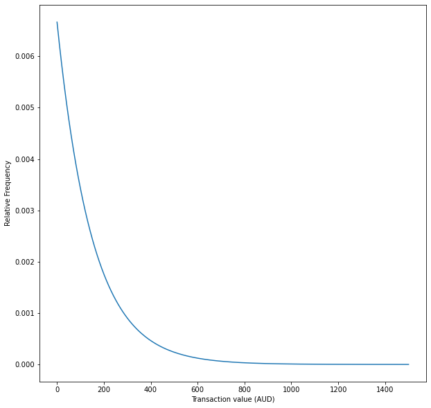

import random
def compute_late_fee(transaction_value,probability_of_late_payment = 0.5):
total_fees = 0
number_of_delays_of_less_than_1_week = 1 + np.random.binomial(3,probability_of_late_payment,1)[0]
if number_of_delays_of_less_than_1_week > 0:
number_of_delays_of_more_than_1_week = np.random.binomial(number_of_delays_of_less_than_1_week,probability_of_late_payment,1)[0]
total_fees = 10 * number_of_delays_of_less_than_1_week + 7 * number_of_delays_of_more_than_1_week
late_fee = min([total_fees,0.25*transaction_value])
late_fee = max([late_fee,10])
return(late_fee)Introduction
From the previous post, I made some high-level estimates for how often Afterpay transactions attracted late fees. If we could better understand the distribution of late fees, we could better estimate the frequency of late fees.
Important
Obviously, I need a disclaimer. If you use anything I say as the basis for any decision, financial or otherwise, you are an idiot.
What do we know?
- Late Fees Revenue: 46.1 million AUD
- Average Transaction Value: Approximately 150 AUD
Furthermore, we know that the lowest and highest fee you can charge for a single transaction is 10 AUD and 68 AUD. Hence, this, in turn, bounds the average of the late fees.
Afterpay is pretty transparent about their late fees; I’ve taken the following from here.
We can model this policy in code, keeping in mind that the customer pays Afterpay 4 separate times.
There are some pieces of information that we still need.
- The distribution of values for transactions where customers pay late.
- How late do they make each payment.
At this stage, we have to accept that we can’t find an exact solution, but we can settle for a good approximation.
One assumption is that the number of late payments is uncorrelated with the transaction value and uniformly distributed for delays of less than and more than one week.
Computing late fees
%matplotlib inline
import pymc3 as pm
import matplotlib.pyplot as plt
import numpy as np
import math
import seaborn as sns
import scipy.stats as st
plt.rcParams["figure.figsize"] = (10,10)
from warnings import filterwarnings
filterwarnings('ignore')Modelling transaction values
Let’s model the transaction values.
I’m making two assumptions:
- Transactions, where the customer is late paying have the same average transaction value as other payments.
- Transaction values are Exponentially distributed.
x = np.linspace(0, 1500, 300)
pdf = st.expon.pdf(x, scale=150)
plt.plot(x, pdf)
plt.xlabel('Transaction value (AUD)')
plt.ylabel('Relative Frequency')
plt.show()
with pm.Model() as model:
average_transaction_value_aud = pm.Uniform('average_transaction_value_aud', lower=144.50, upper=154.49)
transaction_value_aud = pm.Bound(pm.Exponential, upper=1_500.0)('transaction_value_aud', lam = 1/average_transaction_value_aud)Now that we have instantiated all of the random variables, we will take 50,000 draws from them to perform our Monte Carlo simulation.
with model:
samples = pm.sample_prior_predictive(samples=50_000, random_seed=0)sns.distplot(samples["transaction_value_aud"], kde=False, norm_hist=True, bins=100)
plt.title('Histogram of transaction values')
plt.xlabel('Transaction value (AUD)')
plt.ylabel('Relative Frequency')
plt.show()As we can see, this distribution has a mean of approximately 150 AUD.
pm.summary(samples['transaction_value_aud'])arviz.stats.stats_utils - WARNING - Shape validation failed: input_shape: (1, 50000), minimum_shape: (chains=2, draws=4)| mean | sd | hpd_3% | hpd_97% | mcse_mean | mcse_sd | ess_mean | ess_sd | ess_bulk | ess_tail | r_hat | |
|---|---|---|---|---|---|---|---|---|---|---|---|
| x | 150.103 | 150.269 | 0.0 | 422.672 | 0.675 | 0.477 | 49547.0 | 49547.0 | 49322.0 | 49878.0 | NaN |
Modelling late fees
late_fees = []
for transaction_value in samples["transaction_value_aud"]:
late_fee = compute_late_fee(transaction_value)
late_fees.append(late_fee)
late_fees = np.array(late_fees)sns.distplot(late_fees, kde=False, norm_hist=True, bins=np.arange(10,70,1))
plt.xlabel('Average Late Fee (AUD)')
plt.show()pm.summary(late_fees)arviz.stats.stats_utils - WARNING - Shape validation failed: input_shape: (1, 50000), minimum_shape: (chains=2, draws=4)| mean | sd | hpd_3% | hpd_97% | mcse_mean | mcse_sd | ess_mean | ess_sd | ess_bulk | ess_tail | r_hat | |
|---|---|---|---|---|---|---|---|---|---|---|---|
| x | 22.585 | 12.514 | 10.0 | 44.0 | 0.056 | 0.04 | 49161.0 | 49161.0 | 48824.0 | 49670.0 | NaN |
Conclusion
We can now compute the expected average late fee, given the distribution of transaction values and the probability of making each payment on time. In our case, we found the average late fee was 37.49 AUD.
However, we can’t conclude anything meaningful from a single distribution of transaction values and a single probability of making each payment on time.
Given this, we can try many different distributions and use this to find the average late fees distribution. Next post, I will make the way I do the sampling more computationally efficient. This will allow us to draw some meaningful conclusions.